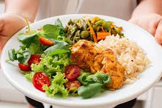
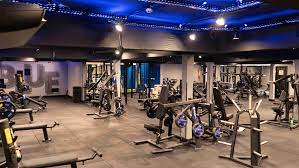
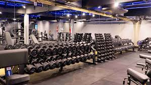

A nutrição desempenha um papel essencial no processo de construção muscular. Para ganhar massa muscular de forma eficaz, é preciso garantir que o corpo tenha os nutrientes necessários para reparar os músculos após os treinos e também para suportar o crescimento muscular contínuo.
Uma alimentação equilibrada, rica em macronutrientes e micronutrientes, é a chave para otimizar o desempenho nos treinos e garantir o aumento da massa muscular. Dietas desequilibradas podem comprometer os resultados desejados, além de afetar a saúde geral do organismo.
Para maximizar o ganho de massa muscular, é fundamental entender o papel de cada macronutriente. Proteínas, carboidratos e gorduras devem ser consumidos nas proporções adequadas para garantir que o corpo tenha o combustível necessário para os treinos e o crescimento muscular.
Esses macronutrientes não apenas fornecem a energia e os blocos de construção para os músculos, mas também têm efeitos diretos sobre os hormônios e a recuperação muscular. Ajustar as quantidades de cada um desses macronutrientes pode fazer uma grande diferença nos resultados obtidos.
As proteínas são fundamentais para o reparo e o crescimento muscular. Após um treino intenso, os músculos sofrem microlesões, e a proteína é essencial para reparar esses danos, tornando-os mais fortes e maiores. Fontes de proteína de alta qualidade, como carne magra, peixe, ovos e leguminosas, são indispensáveis na dieta de quem busca ganhar massa muscular.
Além disso, a ingestão de proteínas deve ser distribuída ao longo do dia, garantindo que o corpo tenha uma quantidade constante desse nutriente. O consumo ideal é de cerca de 1,6 a 2,2 gramas de proteína por quilo de peso corporal para indivíduos que estão em busca de ganho muscular.
Os carboidratos são a principal fonte de energia para o corpo, especialmente durante atividades físicas de alta intensidade. Quando consumidos corretamente, os carboidratos ajudam a repor o glicogênio muscular, o combustível utilizado pelos músculos durante o treino. Isso permite que você tenha mais energia e desempenho durante os treinos.
Carboidratos complexos, como arroz integral, batata-doce e aveia, devem ser priorizados, pois são absorvidos de forma mais lenta, fornecendo energia constante. Além disso, consumir carboidratos após o treino pode ajudar a acelerar a recuperação muscular, reabastecendo as reservas de glicogênio.
Embora as gorduras tenham sido estigmatizadas no passado, elas desempenham um papel essencial no equilíbrio hormonal, especialmente na produção de testosterona, que é crucial para o crescimento muscular. As gorduras saudáveis, como as encontradas em abacates, nozes e azeite de oliva, são fundamentais para o processo de síntese de hormônios no corpo.
Incluir gorduras boas na dieta também ajuda na absorção de vitaminas lipossolúveis e contribui para a saúde cardiovascular. As gorduras devem ser consumidas com moderação, mas não devem ser negligenciadas em uma dieta para ganho de massa muscular.
Para otimizar o ganho de massa muscular, é importante não apenas o que você come, mas também quando você come. Manter uma alimentação regular, com 4 a 6 refeições distribuídas ao longo do dia, ajuda a fornecer nutrientes constantes para o corpo e a manter o metabolismo ativo.
Além disso, a ingestão de alimentos logo após o treino (a famosa "janela anabólica") é fundamental para a recuperação e para estimular o crescimento muscular. Uma refeição com proteínas e carboidratos nesse momento pode acelerar a reposição dos nutrientes necessários para a reparação muscular.
Embora uma alimentação bem planejada seja a base, os suplementos podem ser um bom complemento para maximizar o ganho de massa muscular. Suplementos como a creatina ajudam a aumentar a força e o desempenho nos treinos, enquanto os BCAAs podem diminuir a degradação muscular e melhorar a recuperação pós-treino.
É importante lembrar que suplementos não devem substituir uma alimentação balanceada, mas sim agir como um reforço. Antes de iniciar qualquer suplementação, é sempre recomendado consultar um nutricionista para garantir que você está fazendo as escolhas corretas para o seu corpo e objetivos.
